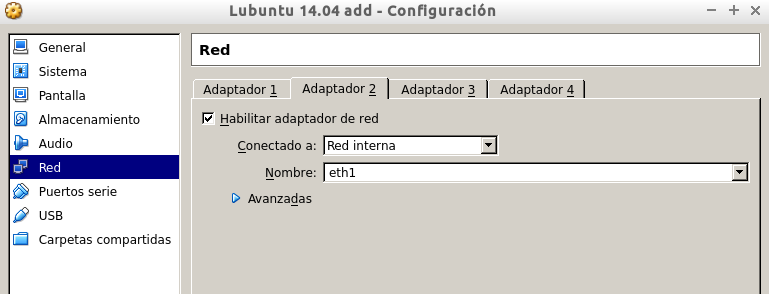

Servidor LTSP |
Preparar MV Cliente
Preparar la MV Server
La MV del servidor necesitará dos interfaces de red
Una externa: para comunicarse con Internet.
Configurarla en VBox como adaptador puente.
IP estática 172.16.108.XX
Una interna: para conectarse con los clientes ligeros.
La IP de esta interfaz de red debe ser estática y debe estar en la misma red que los clientes (IP 192.168.0.1).
Configurarla en VBox como "red interna".
Instalación del SO
Instalar un SO GNU/Linux en la MV.
Nombre de usuario: nombre-del-alumno, en minúsculas, sin tildes ni e√±es. Poner como clave el DNI con la letra en minúsculas.
Clave de root, poner como clave el DNI con la letra en minúsculas.
Poner como nombre de equipo el primer apellido del alumno en minúsculas y sin tildes.
Poner como nombre de dominio el segundo apellido del alumno en minúsculas y sin tildes.
Todo este paso está explicado en el primer vídeo subido en el repositoro de Git, hecho paso por paso.
Luego, creamos 3 usuarios locales llamados:
quintero-alumno1
quintero-alumno2
quintero-alumno3.
Instalar el servicio LTSP
Instalamos el servidor de clientes ligeros, en el caso de Debian/Ubuntu, utilizamos los comandos:
apt-get install ltsp-server-standalone,
ltsp-build-client
Instalamos el servidor SSH:
apt-get install openssh-server
Revisar la configuración de la tarjeta de red interna del servidor. IP estática compatible con la configuración dhcp (/etc/ltsp/dhcpd.conf).
Crear la MV cliente:
Sin disco duro y sin unidad de DVD.
Sólo tiene RAM, flopy.
Tarjeta de red PXE en modo "red interna".

Finalmente, encendemos la MV cliente y comprobamos que todo funciona correctamente, se verá el funcionamiento en el vídeo subido al repositorio Git.